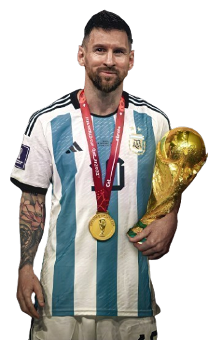

EARLY LIFE

Lionel Andrés Messi was born on 24 June 1987 in Rosario, Argentina. He has three siblings: two brothers, Rodrigo and Matías, and a sister, María Sol. Messi showed an early interest in football, playing with his older brothers and cousins. At the age of five, he joined the local club Grandoli, where he was coached by his father, Jorge Messi. His talent was evident from a young age, and he quickly progressed through the ranks of the club.
CLUB CAREER

Messi began his professional career with FC Barcelona in 2004 at the age of 17. Over the next two decades, he became the club's all-time leading scorer and won numerous titles, including ten La Liga titles and four UEFA Champions League titles. In August 2021, due to financial difficulties faced by Barcelona, Messi transferred to Paris Saint-Germain (PSG) on a two-year contract with an option for a third year.
INTERNATIONAL CAREER

Messi has had a distinguished international career with the Argentina national team. He made his senior debut in 2005 and has since earned over 150 caps. Messi has represented Argentina in multiple Copa América tournaments and FIFA World Cups. In 2021, he led Argentina to victory in the Copa América, securing his first major international trophy.
PERSONAL LIFE

Off the field, Messi is known for his humility and dedication to charitable causes. He married his longtime partner Antonela Roccuzzo in 2017, and they have three children together. Messi is also involved in various philanthropic activities through the Leo Messi Foundation, which focuses on providing access to education and healthcare for vulnerable children.
LEGACY

Lionel Messi is widely regarded as one of the greatest footballers of all time. His exceptional dribbling skills, vision, and goal-scoring ability have earned him numerous individual awards, including seven Ballon d'Or titles. Messi's impact on the sport extends beyond his on-field achievements; he has inspired countless young athletes around the world and continues to be a role model for aspiring footballers.